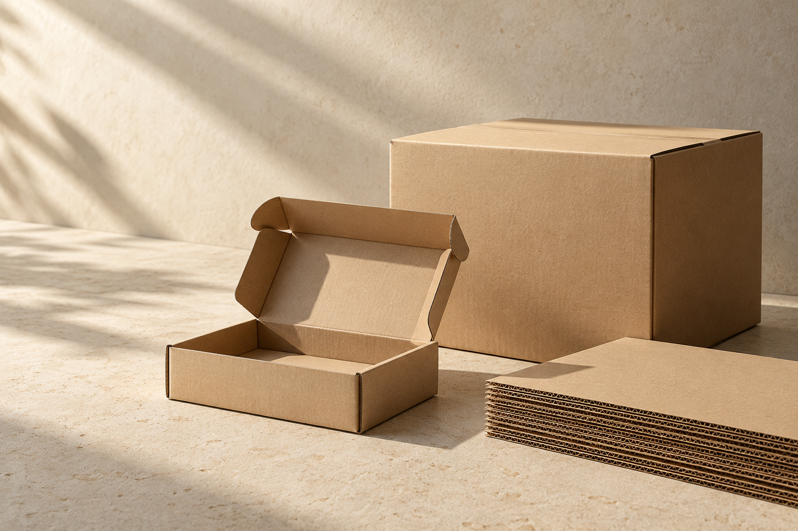
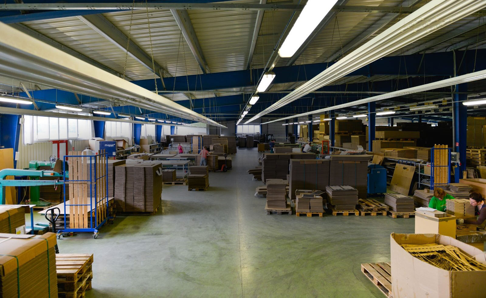
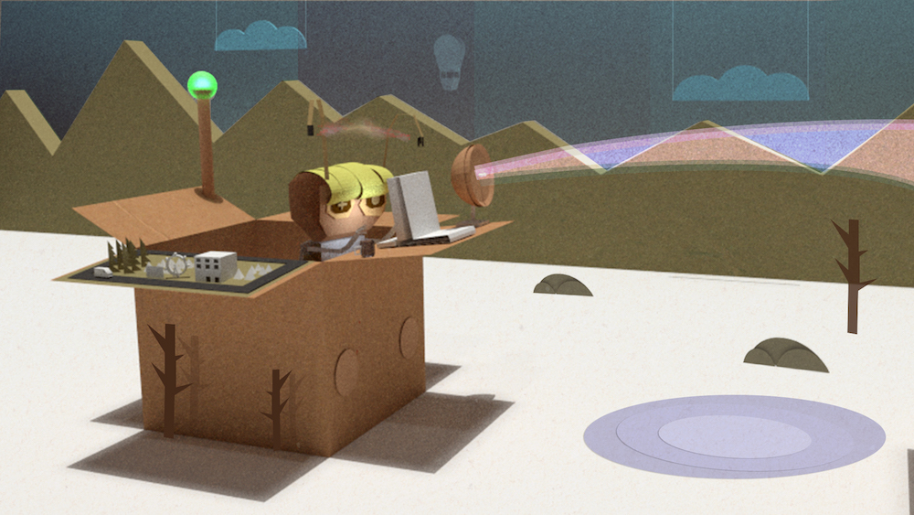
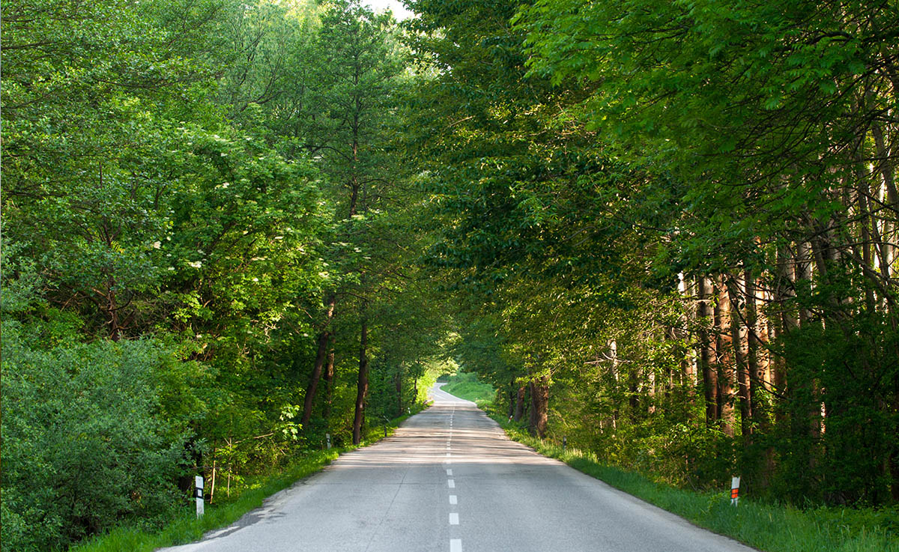

NAVRHNUTÉ PRE VAŠE PRODUKTY. VYROBENÉ NA SLOVENSKU.
Dobrý obal.
Nové možnosti.
Návrh a výroba kartónových obalov na mieru.
Od prvého nápadu po vaše zabalené produkty.

ATLAS / OBALOVÉ RIEŠENIA
Premyslené zvonku.
Pripravené na to, čo je vnútri.
Ilustračný produktový vizuálPripravené na to, čo je vnútri.
VÝROBA NA MIERU7-VRSTVOVÁ LEPENKARECYKLOVATEĽNÉ MATERIÁLYVYROBENÉ NA SLOVENSKU
01 / OBALOVÉ RIEŠENIAPre každý produkt sa začína nový príbeh.
Vaše produkty.
Naše rozmery.
Sme váš partner vo svete obalov. Navrhujeme a vyrábame obaly pre vaše produkty a poskytujeme full servis v oblasti balenia.
02 / ZO SRDCA SLOVENSKAZa každým obalom
Za každým obalom
je skutočná výroba.

7vrstiev
Keď záleží na materiáli.
Vaše produkty balíme aj do 7-vrstvovej lepenky.
Namieru
Rozmery podľa vás.
Kartónové obaly na mieru zo srdca Slovenska.
Ďalšíživot
Materiál s pokračovaním.
Pri výrobe kartónových obalov používame kvalitnú recyklovateľnú lepenku.
03 / AKO TO ZABALÍME SPOLU
Od nápadu
k hotovému obalu.
Máte produkt. My mu navrhneme obal.
Začnime tým, čo potrebujete zabaliť.


PÔVODNÁ FOTOGRAFIA ATLASMATERIÁL, KTORÝ MÁ ZMYSELZ papiera.
Z papiera.
S potenciálom.
Pri výrobe kartónových obalov používame kvalitnú recyklovateľnú lepenku. Správny obal sa začína výberom materiálu pre váš produkt.
Nájdime váš obal ↗04 / ZAČNIME SPOLUPRÁCUČo dnes
Čo dnes
zabalíme?
Opíšte nám svoj produkt a predstavu o obale.
Pripravte si podklady na spoločný rozhovor.